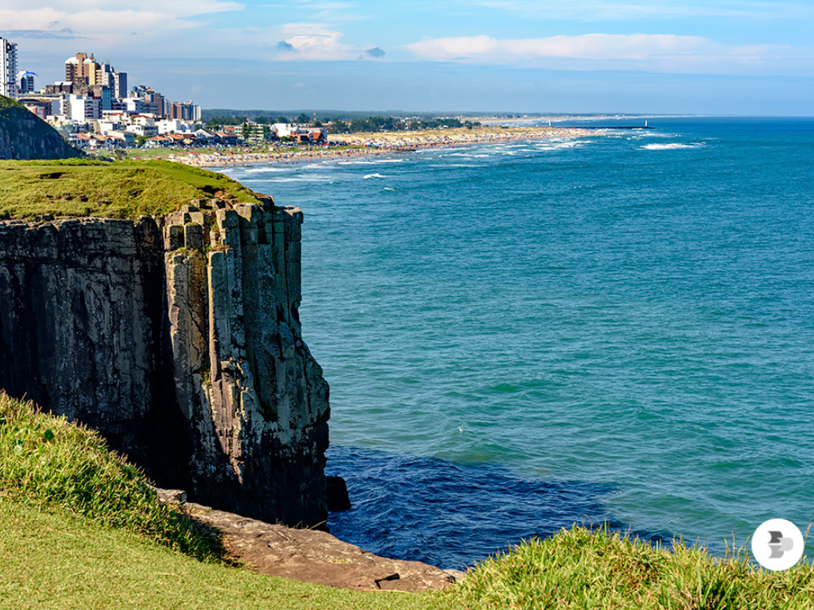

O Rio Grande do Sul, localizado no extremo sul do Brasil, é um estado marcado pela forte influência da cultura gaúcha, pautada na bravura e na tradição campeira, além de ser berço de uma rica imigração europeia, principalmente alemã e italiana. Com uma das economias mais robustas do país, destaca-se na agropecuária — sendo grande produtor de grãos, carnes e vinhos — e na indústria, especialmente na região serrana e no Vale dos Sinos. Geograficamente, o estado apresenta o bioma Pampa, com suas vastas planícies, e a Serra Gaúcha, conhecida pelo turismo de inverno, paisagens de cânions e clima subtropical. Sua capital, Porto Alegre, é um importante centro urbano que, junto a outras cidades como Caxias do Sul e Pelotas, reflete a diversidade cultural e o alto nível de desenvolvimento social.
